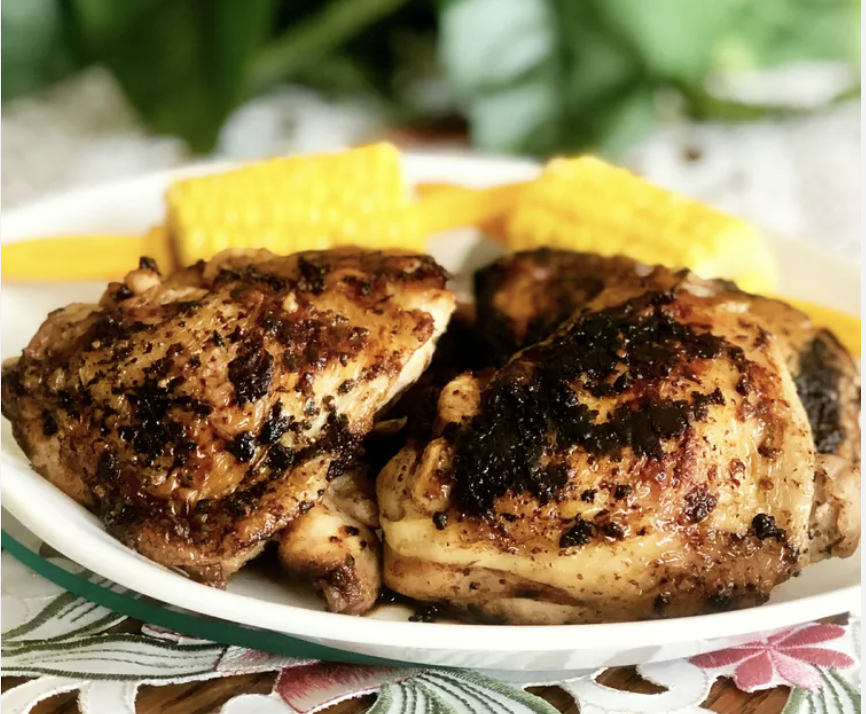

Home
Blackened Ranch Pan-Fried Chicken Thighs

Description
Using a cast-iron skillet for this recipe means these blackened ranch pan-fried chicken thighs take only a few
minutes to cook — great for a weeknight dinner.
Ingredients
- 1 tablespoon vegetable oil
- 2 tablespoons dry ranch dressing mix (such as Hidden Valley Ranch)
- 1 pinch fresh cracked black pepper
- Salt to taste
- 4 chicken thighs
Steps
- Step 1
Heat oil in a cast-iron skillet over medium heat. Rub 1 tablespoon dry ranch dressing mix, fresh cracked pepper, and salt onto one side of chicken thighs; flip and repeat on second side.
- Step 2
Place thighs, skin-sides down, into skillet; cook without moving to blacken skin, about 12 minutes. Flip thighs and cook until chicken is no longer pink in centers and the juices run clear, about 12 minutes more. An instant-read thermometer inserted into centers should read at least 165 degrees F (74 degrees C).